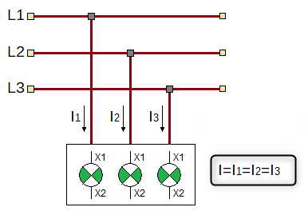
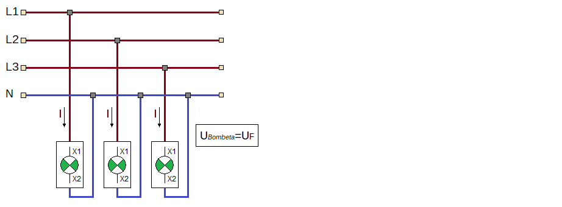

Qualsevol receptor trifàsic equilibrat esta format internament per tres càrregues monofàsiques iguals. Per exemple, imaginem un sistema d'il·luminació trifàsic format per tres bombetes monofàsiques iguals:

Una manera de connectar aquestes tres bombetes a un sistema trifàsic és la següent:

Per poder fer aquesta connexxió, una bombeta connectada a cada fase, s'han de complir dues condicions:
- Disposar de conductor neutre
- La tensió de funcionament de la bombeta ha de coincidir amb la tensió de fase (UBOMBETA=UF) o tensió monofàsica.
Però, que succeeix sino disposem de conductor neutre? Aleshores hem d'utilitzar altres tipus de connexió com poden ser:
- Connexió Estrela
- Connexió Triangle
Un receptor trifàsic és equilibrat si els corrents que consumeix són iguals en magnitud i estan desfasats 120º.